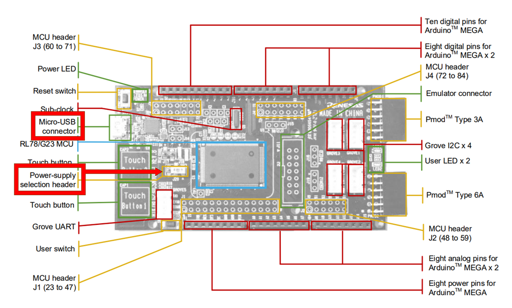

Here we will guide you through the initial steps we need to perform before creating the low power capacitive touch project.
On the board please set jumper J20 to Position 2-3 (+3V3).
And connect the board to your development PC via the USB micro connector.
These are highlted in the image below.

Launch e2studio either from searching in your machines start-menu or manually via the eclipse.exe located in e2studio's install location.
Note: If you have multiple installations, make sure you are using the one which fulfils the version and internal tooling (QE) requirements of this lab!